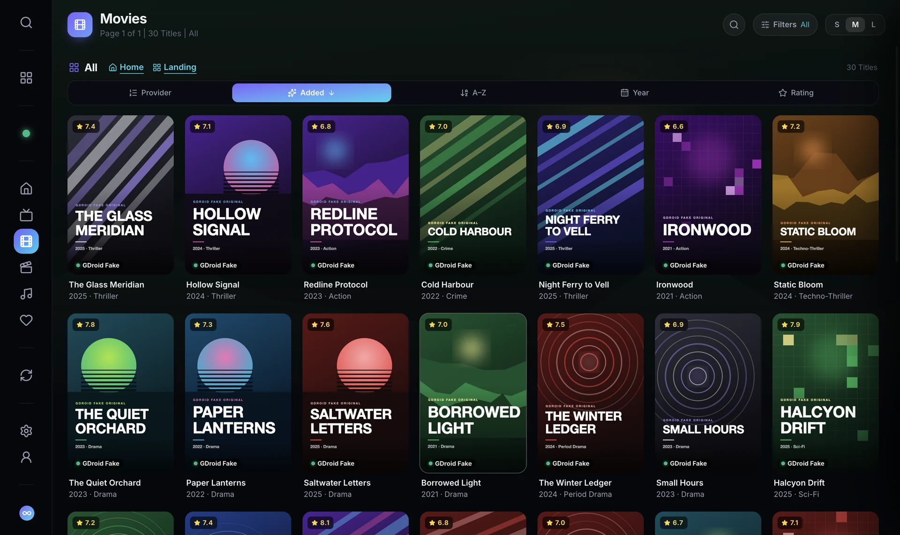

Getting Started
Getting Started
Blog
Tips, Guides and Know-How
Short, practical reads on everything Tachyon does — on your TV, phone and computer. Each one has the steps to use it, right away.
Getting Started Getting Started
Getting StartedHow to Add Your Xtream Codes, M3U or Emby Service
Step by step: add an Xtream Codes login, an M3U playlist link or an Emby server to Tachyon, test it, and use the advanced options when you need them. Getting Started
Getting StartedTry Every Feature With the Built-In Demo
GDroid Fake is Tachyon's offline demo service: live channels with a guide, movies, series and music to try every screen before you add your own service. Your Devices
Your DevicesInstall Tachyon on Fire TV and Google TV With Downloader
Install Tachyon on a Fire TV Stick, Google TV, Android TV or TV box in a few minutes with the free Downloader app and one of two short codes. Getting Started
Getting StartedAll Services: Watch Several IPTV Services as One Library
Use several Xtream Codes, M3U and Emby services in Tachyon: switch on the Landing screen, or merge them into one Home, one channel list and one guide. Getting Started
Getting StartedKeeping Tachyon Up to Date
How Tachyon tells you about a new version, how Update Now installs it on TVs, phones and computers, and how Google Play copies update. Settings
SettingsA Quick Tour of Tachyon's Settings
What every Settings page in Tachyon does — Services, Playback, Subtitles, Appearance, Parental and Data — and the settings worth changing. Settings
SettingsService Sync: Set Up Your Services Once, Use Them Everywhere
Service Sync shares one set of IPTV services across your TV, phone and computer. Change a login on your main device and every other device follows. Settings
SettingsEasy Settings: Change Your TV's Settings From Your Phone
Scan the QR code on your TV and every Tachyon setting opens on your phone. Add services with a real keyboard, back up the TV and save straight to it. Settings
SettingsBack Up and Move Your Settings to a New Device
Save your services, settings, favorites and history to one encrypted file, and load it on a new phone, TV or computer — or after a reinstall.
SettingsApp Lock and the Parental PIN
Lock Tachyon with a 4-digit PIN, open it with your fingerprint, Windows Hello or Touch ID, and keep adult categories hidden behind the same PIN. The Player
The PlayerWatching on TV: Every Remote Key in Tachyon's Player
How to use Tachyon's player with a Google TV, Android TV or Fire TV remote — volume, the channel list, skipping, pausing and Player Options, key by key. The Player
The PlayerWatching on a Phone: Swipes, Pop-Out Window and More
Use Tachyon's player on an Android phone or tablet: swipe for volume, brightness, skipping and channels, keep watching in a pop-out window, and cast to a TV. Your Devices
Your DevicesTachyon on Your Computer: The Desktop App for Windows, macOS and Linux
Everything about Tachyon's desktop app — installing it, the window buttons, Big-Screen Mode, the mini player, external players, Lens and staying up to date. The Player
The PlayerEvery Keyboard Shortcut in Tachyon's Desktop App
The complete list of keyboard shortcuts in Tachyon for Windows, macOS and Linux — browsing, zapping, volume, skipping, subtitles, the mini player and more.
Your DevicesTachyon Lens: Watch HDMI and USB Video on Your Computer
Tachyon Lens shows an HDMI capture card or a camera in a clean window on Windows, macOS and Linux — with sound where you want it, a TV frame and pin on top. The Player
The PlayerPlayer Options: Quality, Picture Size, Sleep Timer and More
A guide to Tachyon's Player Options on TV, phone and computer: Start Over, quality, audio, subtitles, speed, Picture Size, Sleep Timer and more. The Player
The PlayerSubtitles in Tachyon: Online Search, Your Own Files and the Look
Turn on online subtitles from OpenSubtitles, SubDL and Podnapisi, pick subtitles before you press Play, and make them easy to read with fonts, sizes and colours. The Player
The PlayerAudio Languages: Hear Every Title in Your Language
Set up to three audio languages in Tachyon so movies and channels with several soundtracks play in your language first, and switch tracks any time. The Player
The PlayerSound Stabilizer and Volume Up to 250 %
No more reaching for the remote when an ad blares: Tachyon's Sound Stabilizer evens out every channel, and its own volume goes up to 250 % for quiet streams. Your Devices
Your DevicesCast to Your TV With Chromecast
Send a channel, movie or episode from Tachyon on your phone or computer to a Chromecast or Google TV — how to start, what can be cast, and fixes when it can't. Watching
WatchingUsing the TV Guide: Filters, Programme Details and Catch-Up
Find your way around Tachyon's TV Guide — the timeline, filters for movies, sports, kids and news, programme details, Start Over, and fixing guide times. Watching
WatchingCatch-Up and Start Over: Watch What Already Aired
Missed the start of a show? Use Start Over and catch-up in Tachyon to watch programmes from the beginning or days later, where your provider keeps an archive. Watching
WatchingFavorites, Continue Watching and Next Up in Tachyon
Keep your channels and titles one press away, pick up movies where you stopped, and let Next Up line up the next episode of every show you watch. Watching
WatchingMake Home Yours: Home Rows and Popular Channels
Choose which rows Tachyon's Home shows and in what order — Continue Watching, Next Up, On Now, Favorites, new movies and Popular Channels. Watching
WatchingFinding Anything Fast: Search in Tachyon
Search channels, movies and series across your services in Tachyon, narrow a big list with Search in This List, and use your recent searches.
WatchingBig Libraries Made Easy: Updates, Sorting, Pages and Versions
How Tachyon handles libraries of 100,000 titles — the weekly library update, Refresh Library, sorting, pages of 100, categories and grouped versions of a title. Help
HelpReading the Stream Details: Tags and the Stream Info Line
What Tachyon's stream tags and the Stream Info line (Needs, Provider, Arriving, Buffered, Line) tell you, and where a slowdown comes from. Help
HelpBuffering and Playback Problems: A Troubleshooting Guide
Fix buffering, freezing, no sound, black pictures and connection-limit messages in Tachyon — what each message means and what to try, step by step. Help
HelpOne Connection Per Service: Why Tachyon Never Opens a Second Stream
Tachyon holds at most one stream connection per IPTV account, so single-connection and shared plans keep working. Here's how it works and what it means for you.New articles in your feed reader: the blog’s Atom feed. Looking for one setting? The Manual explains every option.